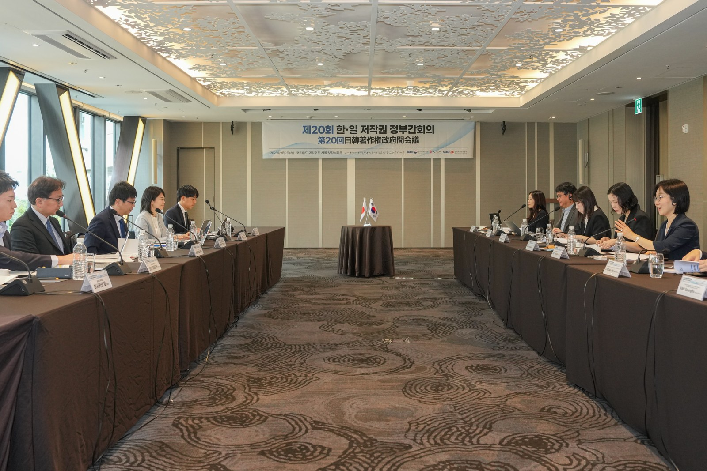
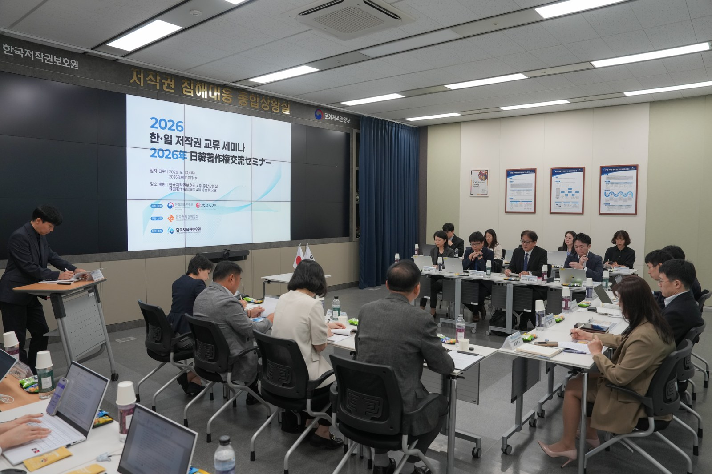

앤트로픽 해적판 책 합의금 이달 말 첫 지급…한국 작가 책 21종도 포함
합의금 15억달러, 1차 지급액은 비용 빼고 한 종 2203.56달러…미국 법원은 학습 공정이용·해적판 불인정
한국은 공정이용 안내서와 인공지능기본법 표시 의무…문체부 장관은 현행법 한계 인정
AI경제저널=김갑봉 기자 | 미국 AI 기업 앤트로픽이 해적판 책을 내려받아 쌓은 대가로 내는 합의금을 작가와 출판사가 이달 말 처음 받는다. 원고와 앤트로픽은 10월 23일 법원에 낸 문서에서 첫 지급을 11월 23일이 낀 주로 예상했다.
합의금은 15억달러(약 2조150억원, 11월 11일 환율)다. 원고 변호인단은 9월 2일 법원 보고서에서 1차 지급액을 비용을 빼고 한 종 2203.56달러(약 296만원)로 계산했다.
한국문학번역원이 확인한 한국 작가 책 21종도 대상에 들어 있다. 국내에서는 앤트로픽이 한국 책을 대량으로 사들였다는 의혹도 나왔다. 최휘영 문화체육관광부 장관은 11월 5일 국회에서 현행법으로는 방법이 없다며 보완이 필요하다고 답했다.

청구된 책 44만9731종
소송은 2024년 8월 미국 캘리포니아 북부 연방지방법원에서 시작됐다. 원고 작가 3명은 같은 처지 권리자를 대표해 집단소송을 냈다. 이들은 앤트로픽이 해적판 책을 내려받아 AI 클로드를 학습시켰다고 주장했다.
아라셀리 마르티네스올긴 판사가 2026년 7월 20일 합의를 최종 승인했다. 대상 목록에 오른 책은 약 50만 종이고, 실제 청구된 책은 44만9731종이다.
앤트로픽은 2025년 10월 2일과 최종 승인 직후 3억달러씩 냈다. 2026년 8월 19일에는 4억5000만달러를 냈다. 남은 4억5000만달러는 늦어도 2027년 9월까지 이자를 더해 낸다.
법원은 변호사 보수를 깎았다. 원고 변호인단은 합의금 12.5%인 1억8750만달러를 요청했다. 법원은 약 6.8%(약 1억156만달러)만 인정했다.
책 한 종 몫은 그 책 권리자끼리 나눈다. 일반 책은 따로 정하지 않으면 작가와 출판사가 절반씩 받는다. 첫 지급은 배분 다툼이 없고 지급 정보를 다 낸 책부터 한다.
학습과 해적판 가른 판결
합의 전 윌리엄 앨섭 판사는 학습과 해적판을 갈랐다. 그는 2025년 6월 23일 결정문에서 책을 AI 학습에 쓴 일은 공정이용이라고 판단했다. 공정이용은 남의 저작물을 허락 없이 써도 되도록 법이 정한 예외다.
사들인 종이책을 스캔해 디지털 파일로 바꾼 일도 공정이용으로 봤다. 해적판은 달랐다. 결정문은 앤트로픽이 해적판 책을 700만 부 넘게 내려받았다고 적었다.
판사는 두고두고 쓸 장서를 만든다는 목적이 해적판을 정당화하지 못한다고 판단했다. 양측은 해적판 손해배상 재판을 앞두고 합의를 택했다. 합의서는 이 합의를 앤트로픽이 책임을 인정한 증거로 쓰지 못하게 했다.
결정문은 해적판 자료 일부가 여러 모델 학습에 쓰였다고 적었다. 앤트로픽은 합의서에서 그 가운데 라이브러리 제네시스·파이럿 라이브러리 미러 자료는 상용 모델 학습 자료에 없었다고 밝혔다. 두 곳에서 내려받은 원본 파일은 없애기로 했다.
미국 저작권청은 2025년 5월 9일 사전 공개한 연구보고서에서 공정이용 한계를 짚었다. 방대한 저작물을 상업적으로 써서 원작과 겨루는 콘텐츠를 만들면 공정이용을 넘는다고 봤다. 불법으로 얻은 자료라면 더 그렇다고 했다.
한국 작가 책 21종
한국문학번역원은 10월 17일 합의 대상 목록에 한국 작가 책 21종이 올라 있다고 밝히고 작가들에게 알렸다. 한강 『소년이 온다』, 황석영 『손님』, 김영하 『빛의 제국』 등이다.
김영하 작품이 4종, 신경숙과 한강 작품이 3종씩 올랐다. 21종은 영문 번역판이다. 번역원은 필요하면 법적 조치까지 돕겠다고 밝혔다.
11월 5일 국회 문화체육관광위원회에서는 최민희 더불어민주당 의원이 다른 의혹을 물었다. 앤트로픽이 국내 종이책을 대량으로 사들여 AI 학습에 쓴다는 의혹으로, 해적판 21종과는 별개다.
최휘영 장관은 "현행법으로는 어떻게 할 수 있는 방법이 없다. 보완이 필요하다"고 답했다. 동의 없는 AI 학습 대응은 세계지식재산기구(WIPO)와 함께 논의할 사안이라고도 했다.
한국 공정이용 안내서와 예산
한국 저작권법 제35조의5는 공정이용을 따지는 네 기준을 둔다. 쓰는 목적과 성격, 저작물 종류와 용도, 쓴 부분의 비중과 중요성, 원작 시장이나 가치에 주는 영향이다.
문체부와 한국저작권위원회는 2월 26일 이 기준을 AI 학습에 맞춰 푼 안내서를 냈다. 상업적 목적이나 자동 수집(크롤링)이라는 이유만으로 공정이용에서 빠지지는 않는다고 적었다.
안내서는 해적판이나 보호 장치를 뚫고 얻은 자료를 불리하게 볼 수 있다고 했다. 학습 결과물이 원작을 대신하면 시장 영향 판단에서 불리하게 볼 수 있다고 적었다.
두 기관은 안내서 속 가상 사례가 공식 유권해석이 아니라고 밝혔다. 개별 사건은 법원이 판단한다.
문체부는 9월 한·일 저작권 정부간회의에서 2027년 공공저작물 AI 학습데이터 개방 예산을 올해보다 3배로 늘리는 계획을 소개했다. 인공지능 저작권 신뢰 거버넌스 기술개발 예산 31억원도 새로 편성했다고 밝혔다.

AI 결과물 표시 의무
인천투데이는 2025년 3월 10일 오픈AI 새 모델 GPT-4.5를 다뤘다. 기사는 저작권 소송이 늘고 인격권 침해 우려가 커질 것이라고 짚었다. 오픈AI는 그 모델을 개발자용 서비스에서 2025년 7월 14일 내렸다.
한국은 AI 결과물 표시를 법으로 의무화했다. 2026년 1월 22일 시행된 인공지능기본법 제31조는 생성형 AI 결과물에 AI가 만들었다는 사실을 표시하게 했다. 실제와 구분하기 어려운 음향·이미지·영상은 이용자가 분명히 알 수 있게 알리도록 했다.
과학기술정보통신부는 애니메이션이나 웹툰처럼 딥페이크가 아닌 결과물에 눈에 보이지 않는 디지털 워터마크도 허용했다. 1년 이상 규제를 유예하고 과태료 계도기간을 둔다고도 밝혔다.
과기정통부 관계자는 워터마크가 딥페이크 오용 같은 부작용을 막는 최소한의 안전장치라고 말했다. 법 제43조는 AI 사용 사실을 미리 알리지 않은 사업자 등에게 3000만원 이하 과태료를 매기게 했다.
이 글은 인천투데이 2025년 3월 10일 게재 기사를 최신 상황으로 고쳐 썼다.
참고문헌
- Bartz v. Anthropic PBC, No. C 24-05417 WHA, 「Order on Fair Use」(Document 231), 미국 캘리포니아 북부 연방지방법원, 2025.6.23., https://storage.courtlistener.com/recap/gov.uscourts.cand.434709/gov.uscourts.cand.434709.231.0_3.pdf
- Bartz v. Anthropic PBC, 「Class Action Settlement Agreement」(Document 363-3), 2025.9.5. 제출, https://storage.courtlistener.com/recap/gov.uscourts.cand.434709/gov.uscourts.cand.434709.363.3.pdf
- Bartz v. Anthropic PBC, No. 4:24-cv-05417-AMO, 원고 변호인단 「Status Report」(Document 688), 2026.9.2., https://storage.courtlistener.com/recap/gov.uscourts.cand.434709/gov.uscourts.cand.434709.688.0.pdf
- Bartz v. Anthropic PBC, No. 4:24-cv-05417-AMO, 「Joint Stipulation and [Proposed] Order Approving Further Updates to the Settlement Website」(Document 694), 2026.10.23., https://storage.courtlistener.com/recap/gov.uscourts.cand.434709/gov.uscourts.cand.434709.694.0.pdf
- 「Anthropic Copyright Settlement」 합의 관리 누리집(JND Legal Administration) 첫 화면·FAQ, 2026.11.11. 확인, https://www.anthropiccopyrightsettlement.com/
- Authors Guild, 「Court Grants Final Approval of $1.5 Billion Anthropic Copyright Settlement」, 2026.7.21., https://authorsguild.org/news/court-grants-final-approval-anthropic-copyright-settlement/
- Authors Guild, 「Bartz v. Anthropic Settlement: What Authors Need to Know」, 2026.10.29. 갱신, https://authorsguild.org/advocacy/artificial-intelligence/what-authors-need-to-know-about-the-anthropic-settlement/
- 미국 저작권청(U.S. Copyright Office), 「Copyright and Artificial Intelligence, Part 3: Generative AI Training(Pre-Publication Version)」, 연구보고서, 2025.5.9., https://www.copyright.gov/ai/Copyright-and-Artificial-Intelligence-Part-3-Generative-AI-Training-Report-Pre-Publication-Version.pdf
- 미국 저작권청, 「Copyright and Artificial Intelligence」 보고서 목록(Part 3 최종본 미발간), 2026.11.11. 확인, https://www.copyright.gov/ai/
- 국가법령정보센터, 「저작권법」 제35조의5(저작물의 공정한 이용), 2026.11.11. 확인, https://www.law.go.kr/법령/저작권법/제35조의5
- 국가법령정보센터, 「인공지능 발전과 신뢰 기반 조성 등에 관한 기본법」(법률 제20676호, 2026.1.22. 시행) 제31조·제43조, 2026.11.11. 확인, https://www.law.go.kr/LSW/lsInfoP.do?lsiSeq=268543&efYd=20260122
- 한국저작권위원회·문화체육관광부, 「생성형 인공지능의 저작물 학습에 대한 저작권법상 공정이용 안내서」(PDF 82쪽·누리집 표기 81면, 원문 확인), 2026.2.26., https://www.copyright.or.kr/information-materials/publication/research-report/view.do?brdctsno=55211
- 문화체육관광부 문화인공지능정책과, 「「생성형 인공지능의 저작물 학습에 대한 저작권법상 '공정이용' 안내서」 발간」, 보도자료(PDF 원문 확인), 2026.2.26., https://www.mcst.go.kr/site/s_notice/press/pressView.jsp?pSeq=22261
- 문화체육관광부 저작권정책과, 「한국과 일본, 인공지능 시대의 저작권 제도 논의하다」, 보도자료(PDF 원문 확인), 2026.9.11., https://www.mcst.go.kr/site/s_notice/press/pressView.jsp?pSeq=22712
- 김·장 법률사무소, 「문화체육관광부, 생성형 인공지능 공정이용 안내서 발간」, 뉴스레터, 2026.3.9., https://www.kimchang.com/ko/insights/detail.kc?sch_section=4&idx=34407
- 법무법인(유) 세종, 「「생성형 인공지능의 저작물 학습에 대한 저작권법상 "공정이용" 안내서」 발간」, 뉴스레터, 2026.3.4., https://shinkim.com/kor/media/newsletter/3153?page=29
- 과학기술정보통신부 인공지능안전신뢰정책과, 「'인공지능기본법' 22일 시행…생성형 AI 결과물 '워터마크' 표시 의무」, 정책브리핑, 2026.1.21., https://www.korea.kr/news/policyNewsView.do?newsId=148958380
- OpenAI, 「Deprecations」(gpt-4.5-preview 항목), 2026.11.11. 확인, https://developers.openai.com/api/docs/deprecations
- 서울외국환중개, 「오늘의 환율」(미 달러 매매기준율 1343.30원), 2026.11.11., http://www.smbs.biz/ExRate/TodayExRate.jsp (한국수출입은행 환율정보 같은 값, https://www.koreaexim.go.kr/wg/HPHKWG057M01)
- 김갑봉, 「[특집] '역대 가장 강력' GPT4.5 감성·창작 탁월... 저작권·인격권 더 우려」, 인천투데이, 2025.3.10., https://www.incheontoday.com/news/articleView.html?idxno=264501
사진 출처
- [사진1] 문화체육관광부 보도자료 「한국과 일본, 인공지능 시대의 저작권 제도 논의하다」 붙임 현장 사진, 2026.9.11., https://www.mcst.go.kr/site/s_notice/press/pressView.jsp?pSeq=22712, 공공누리 제1유형(출처표시)
- [사진2] 같은 보도자료 붙임 현장 사진(2026.9.10. 한·일 저작권 교류 세미나), 공공누리 제1유형(출처표시)